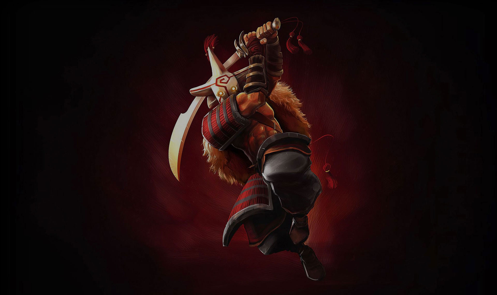
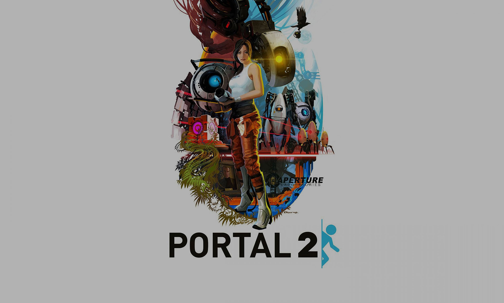

-

Dota 2
Every day, millions of players worldwide enter battle as one of over a hundred Dota heroes. And no matter if it's their 10th hour of play or 1,000th, there's always something new to discover. With regular updates that ensure a constant evolution of gameplay, features, and heroes, Dota 2 has taken on a life of its own.
Dota 2 has a large esports scene, with teams from across the world playing in various professional leagues and tournaments. Valve manages an event format known as the Dota Pro Circuit, which are a series of tournaments held every year that award qualification points for getting a direct invitation to The International, the premier tournament of the game with a prize pool usually totaling over US$20 million. Media coverage of most Dota 2 tournaments is done by a selection of on-site staff who provide commentary and analysis for the ongoing matches, similar to traditional sporting events. In addition to playing matches to a live audience in arenas and stadiums, broadcasts of them are also streamed live over the internet, and sometimes simulcast on television networks, with peak viewership numbers in the millions.
-

Portal 2
Portal 2 is a new single player game from Valve. Set in the mysterious Aperture Science Laboratories, Portal has been called one of the most innovative new games on the horizon and will offer gamers hours of unique gameplay.
Like the original Portal (2007), players solve puzzles by placing portals and teleporting between them. Portal 2 adds features including tractor beams, lasers, light bridges, and paint-like gels that alter player movement or allow portals to be placed on any surface. In the single-player campaign, players control Chell, who navigates the dilapidated Aperture Science Enrichment Center during its reconstruction by the supercomputer GLaDOS (Ellen McLain); new characters include robot Wheatley (Stephen Merchant) and Aperture founder Cave Johnson (J. K. Simmons).
-

Counter-Strike: Global Offensive
Counter-Strike: Global Offensive (CS: GO) expands upon the team-based action gameplay that it pioneered when it was launched 19 years ago. CS: GO features new maps, characters, weapons, and game modes, and delivers updated versions of the classic CS content (de_dust2, etc.).
Global Offensive received positive reviews from critics on release, who praised for its gameplay and faithfulness to predecessors, though it was criticized for some of its early features and was noted for differences between the console and PC versions. Since its release, it has drawn in an estimated 11 million players per month, and has gathered an active competitive scene, with many tournaments sponsored by Valve themselves. In December 2018, Valve transitioned the game to a free-to-play model, focusing on revenue from cosmetic items.